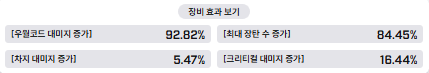
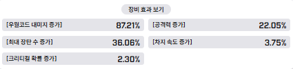
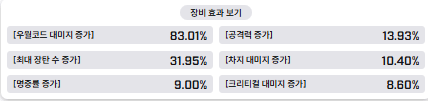
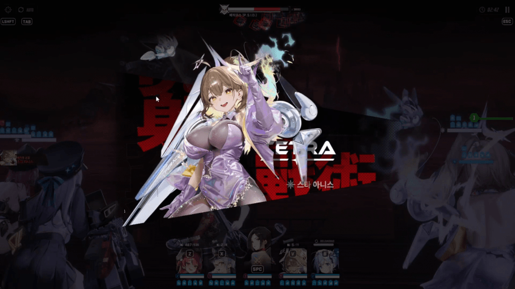
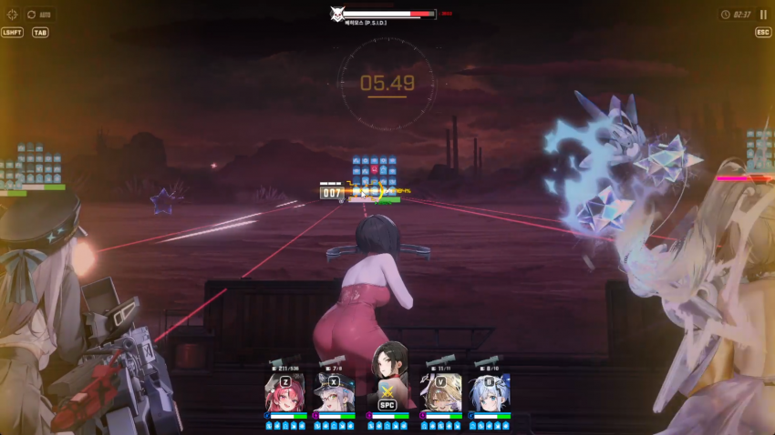
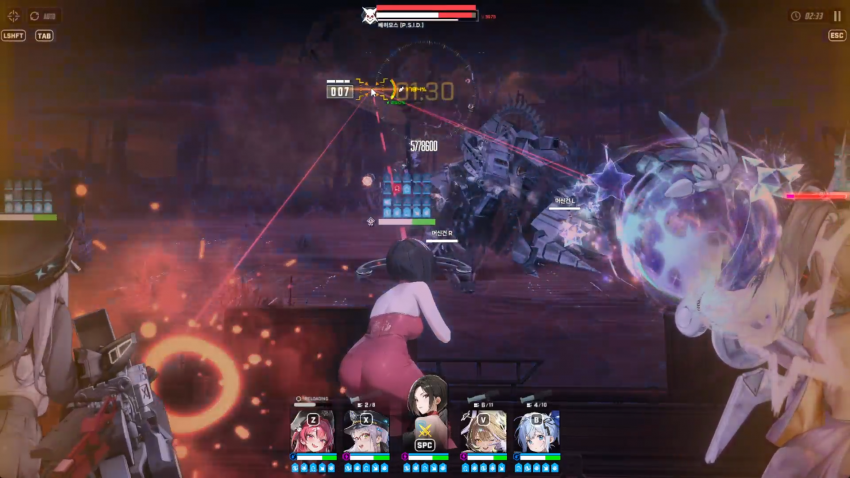
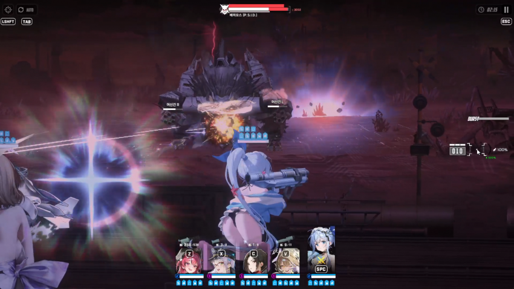
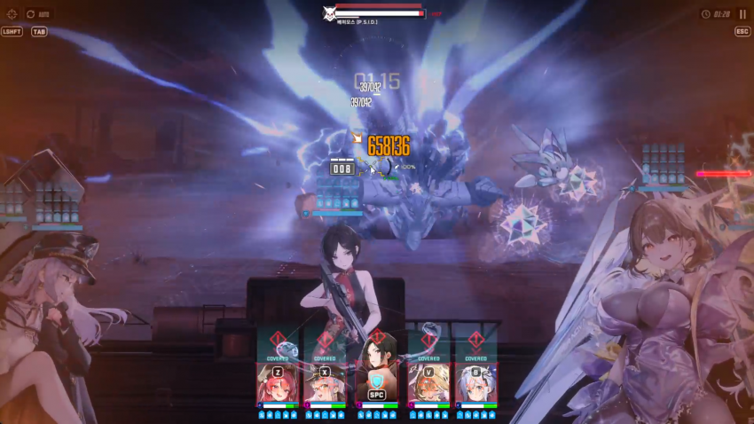
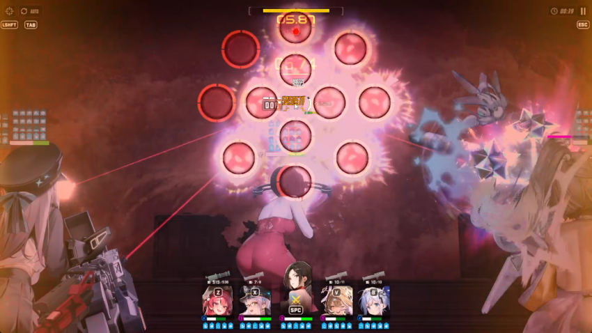
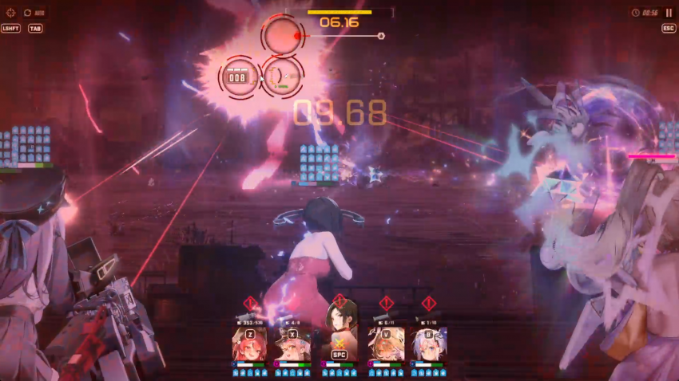

일단 주요 니케들 스펙
아니스

네온

에이다

헬름 쓰는거보다 이게 더 쎄서 웡 있다면 이 조합이 베스트 같음
웡이 없다면 리버렐리오 넣으면 되긴 하지만 좀더 컨트롤을 해줘야 할거임
특히 리버렐리오 넣으면 엄폐물 관리 빡세서 많이 어려움
바로 공략 들어가겠음
일단 바로 들어오자마자 웡으로 톡톡이, 다 안차면 앵커로 톡톡이해서 네온 선버 켜기
보통 56초에 켜질거임

이후에 2분 42초쯤에 맞춰서 버스트 켜기
빡으로 버충 하면 그전에도 켜지는데 42초에 맞춰야 함

그리고 웡 버스트 차지 꾹 누른 상태로 스킵 절대!!! 하지 말기
스킵 누르려고 마우스 떼는순간 버스트 큰거 한방이 날아가버림

버스트가 꺼지기 전에 바로 웡 버스트 한방 날려서 바위 부수기
아마 거의 부서질거임
평소에 베히모스 에임두는 곳은 그냥 중앙에 두면 됨
어차피 네온 폭발범위가 넓어서 알아서 양쪽 머신건에 닿고 깨짐
만약 깨지지 않는다면 깨는게 좋을듯
그리고 다음 버스트는 돌 날라오고 한 1초? 정도 있다가 버스트 쓰기
영상에서는 앵커 버충 하려다가 삑나서 이렇게 되버렸는데 빡 버충하면 좀 남을거임

그리고 대부분의 버충은 앵커 잡고서 에임 간 곳에다가 톡톡이 하는게 좋음
이후는 계속 버스트 돌리면 됨

돌진할때 엄폐해주고

족자저지는 그냥 에이다 꾹누르고 있으면 됨
영상에서는 두번째 저지만 이렇게 했음 실수

알다시피 족자후 전기패턴 나옴
혹시 몰라서 웡 바로 버스트 버리고 톡톡이로 저지 해줬음
한번 더 족자 기믹 수행 후 잡았음
이 다음 전기 패턴은 아마 체력상 버틸수 없을거임
그래서 두번째 전기패턴 초반까지 해서 승부를 봐야함
끗